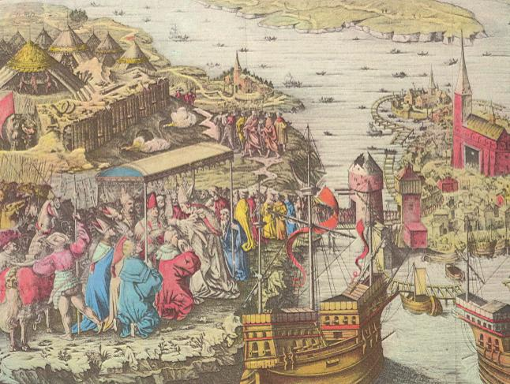

|
 Del av Blodbadsplanschen Den säkert mest bekanta bilden ur Stockholms äldre historia är Blodbadsplanschen, som inte lämnar mycket osagt, när det gäller att skildra den danske kung Christiern Tyranns grymheter i den erövrade svenska huvudstaden. Man får moderna frontreportage i tankarna, när man studerar detaljerna i det kopparstick, som bevarats till vår tid, och vilket i sin tur bygger på ett äldre träsnitt. Blodbadsplanschen visar bl. a. den danske monarkens belägring av Stockholm och hans edsavläggelse på Södermalm . Till vänster skrider den storstilade processionen genom porttornen, av vilka det ena är sönderskjutet under belägringen. Topografiskt sett är denna, vår äldsta bild av Stockholms stad, omgiven av pålkransar med bomöppningar för skeppen, mindre noggrann; de bägge skeppen i förgrunden, väl ett par av danske kungens, är tyvärr inte heller i detalj vederhäftigt återgivna. - Handkolorerat kopparstick av Dionysius Padt-Brugge 1676 efter ett större träsnitt utfört av Kort Steinkamp och Hans Kruse i Antwerpen 1524. Koloreringen är samtida med sticket. Förminskat faksimile (originalets storlek 41 X 60 cm). Det Kongelige Bibliotek, Köpenhamn. |